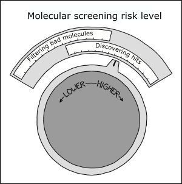

What do molecular properties look like?
Github repo
View the app
Screening library design (virtual or IRL) requires multiple decisions that affect the cost, time, and eventual success of a screening campaign. For example - should PAINS compounds be included or filtered out beforehand? What about Brenk filtering to remove molecules more likely to be toxic? Positively charged compounds have higher risk of hERG inhibition, but might be desirable for a negatively-charged binding site, leading to a balancing act. In general, harsher filters reduce the downside risk of initial hits being bad drugs, but might reject some good drugs too (source):

The starting point for filtering is arguably logP (hydrophobicity) and molecular weight (size). Too large and too 'greasy' makes for an unlikely drug (with the exception of natural products). To help get an intuitive feel for these properties to complement the empirical rules in the literature, I built a tool to visualize molecules falling within a MW and LogP range.
It uses a free server provided by streamlit and RDKit to calculate properties and visualize molecules. These two packages make a great combination and would be ideal to publish machine learning models as well as tools like this. Check it out and if you want to see different properties just leave a comment on the github!